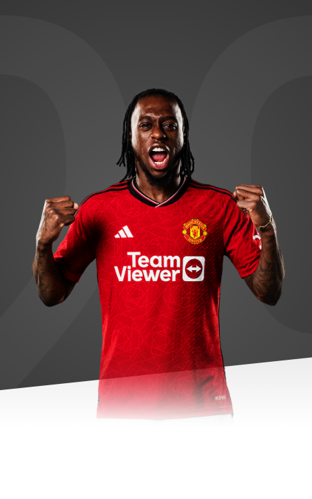

"Every kid wants to play for a team like this. It's an honour to represent this
club."

AGE
25
APPEARANCES
165
CLEAN SHEETS
2
BIOGRAPHY
Aaron Wan-Bissaka became Manchester United's second signing of the summer transfer window in
June 2019 when he joined from Crystal Palace.
The talented England Under-21 international took to Premier League life like a duck to water
at Palace.
It barely mattered that he was still a rookie in the right-back position, having spent much
of his time in the Eagles' Academy operating further up the flank or even as a forward.
Palace coach Kevin Keen suggested him as an option in defence when they had a training game
and he marked ex-Reds winger Wilfried Zaha so well, the experiment continued.
Even if he never saw himself as a defender back then, Wan-Bissaka displayed great
application and soon looked a natural in the role. Described as “dogged and determined” by
Roy Hodgson, and a “cool customer” by Under-23s coach Richard Shaw, the youngster never
looked back after making his debut against Tottenham Hotspur in February 2018.
An excellent performance against United soon followed, deputising for Tim Fosu-Mensah when
the Dutchman was ineligible due to the terms of his loan move, and he deservedly won the
club's Young Player of the Year award in the 2017/18 campaign.
A year later, he picked up the senior prize after a stellar season for the south Londoners,
registering outstanding statistics. Indeed, he outperformed every other Premier League
full-back for clearances, tackles won, tackle success-rate, take-ons and interceptions. The
speculation surrounding his future had, by then, already started with United reckoned to be
long-time suitors.
Involvement in the Under-21 European Championship with England meant any move, however,
would have to be on hold.
He had initially represented Congo, where his father was born, at Under-20 level in a
friendly against England's Under-17s at St George's Park, but has since been successfully
integrated into the Three Lions' set-up.
A deal with United was concluded following England's exit from the finals in Italy and San
Marino, enabling Wan-Bissaka to sign on the dotted line.
This club is known for winning trophies and I want to be a part of that, to win my first,”
Aaron told us in his opening interview. “I can see that the fan-base is huge and they
support the team through thick and thin. I am going to give everything for the club and for
the fantastic fans and I can't wait to get started.
Aaron completed his move on 29 June 2019, before recharging his batteries on holiday ahead
of linking up with his new colleagues later in the summer.
A determined right-back, he scored his first United goal at Newcastle in October 2020 and
went on to make his 100th appearance for the club during the Europa League final defeat to
Villarreal.
In 2021/22, Wan-Bissaka made a further 26 appearances for the Reds, starting the first 13
consecutive Premier League matches of the season. Unfortunately, a hand injury and illness
halted the right-back's progress and his appearances for the remainder of the season were
sporadic.
Injury forced Aaron to miss the beginning of the 2022/23 campaign but following the winter
break for the 2022 World Cup, the right-back made the position his own. Used regularly by
Erik ten Hag between the turn of the year and the end of the season, Wan-Bissaka made 34
appearances in all competitions and put in some superb displays, such as in the second half
of United's Carabao Cup final triumph over Newcastle and the Premier League away trip to his
former club Palace - which saw him named our Man of the Match.